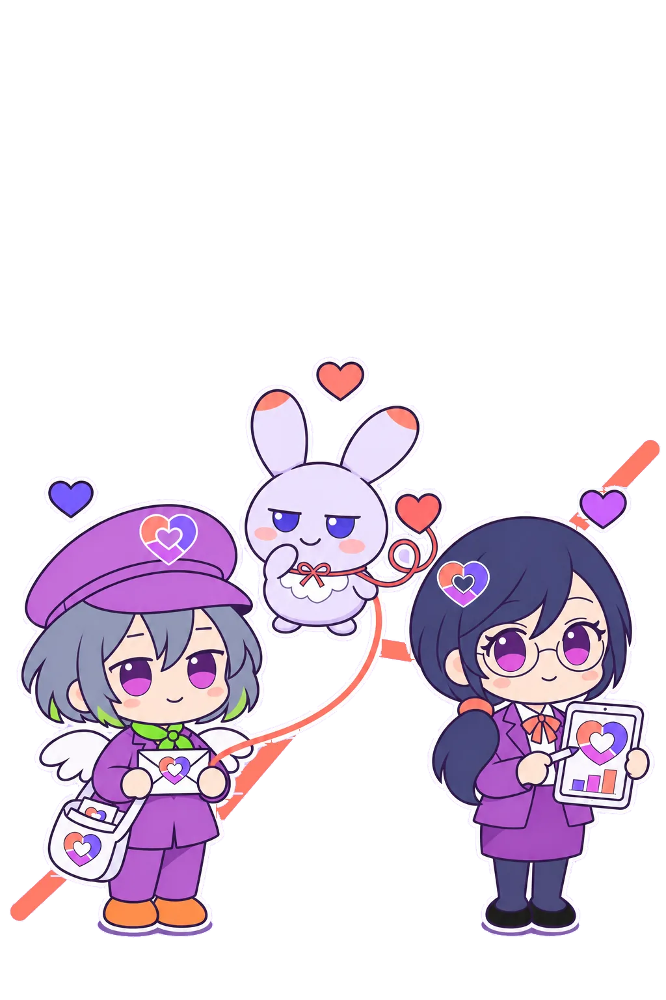
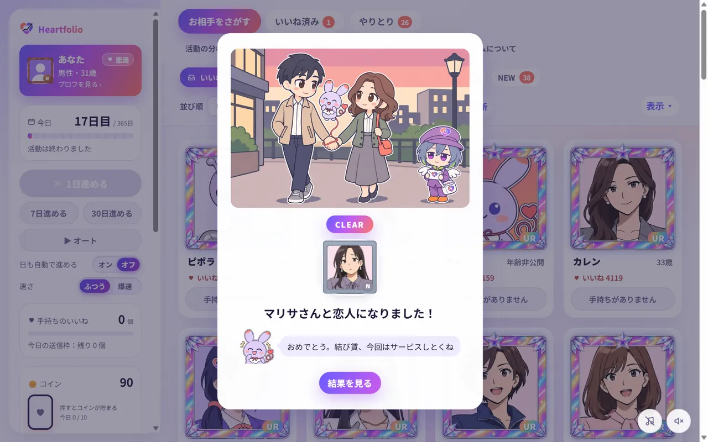
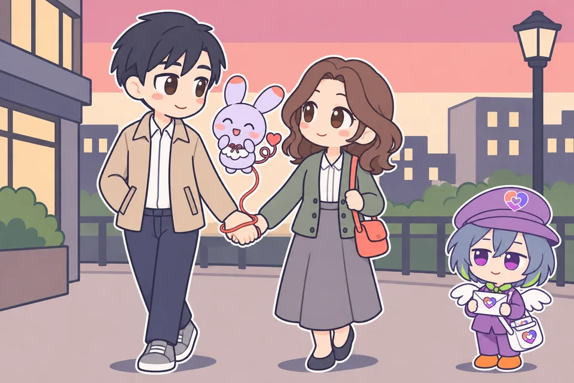
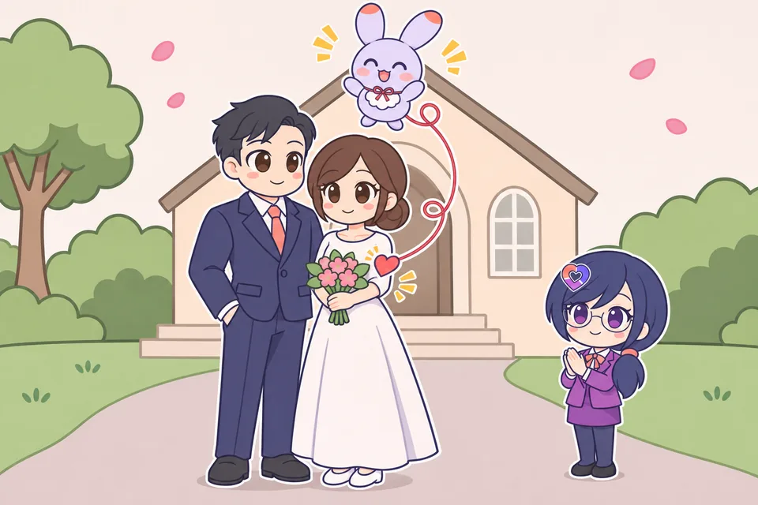
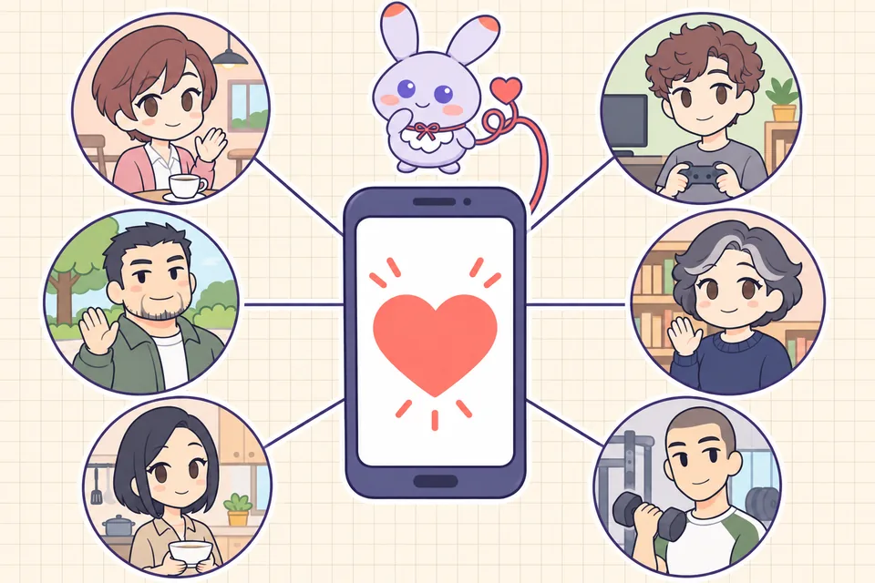

お相手をさがす
カードを見て、いいね
- 1プロフと、その人がもらっているいいねの数を見て、送る相手を決めます。送れるのは1日40個まで
- 2並び順や細かい条件で、相手を絞り込めます
- 3カードの縁の輝きは、その人の魅力の階級（N〜UR）です
GAMEゲーム紹介
マッチングアプリを題材にした恋愛シミュレーションです。限られたいいねをやりくりしながら、期限までに恋人を探します。
無料・登録なし

ABOUT
いいねをだれに、どれだけ送るか。その配り方しだいで、恋の行方が変わります。
数字を見てから、
決めましょう
恋・好きの気持ち
資産の配分
%20scale(.52)%20translate(-50%20-48)'/%3e%3c/mask%3e%3c/defs%3e%3cg%20mask='url(%23ring)'%3e%3cpolygon%20points='50,48%2050,-50%20150,-50%20150,148'%20fill='%236b5cff'/%3e%3cpolygon%20points='50,48%20150,148%20-50,148%20-50,66'%20fill='%23c25cf0'/%3e%3cpolygon%20points='50,48%20-50,66%20-50,-50%2050,-50'%20fill='%23ff7a6b'/%3e%3cg%20stroke='%23fff'%20stroke-width='4'%3e%3cline%20x1='50'%20y1='48'%20x2='50'%20y2='0'/%3e%3cline%20x1='50'%20y1='48'%20x2='110'%20y2='108'/%3e%3cline%20x1='50'%20y1='48'%20x2='-10'%20y2='59'/%3e%3c/g%3e%3c/g%3e%3cg%20stroke='%23fff'%20stroke-linecap='round'%20stroke-linejoin='round'%20fill='%23fff'%3e%3cpolyline%20points='26,64%2040,53%2051,59%2081,23'%20fill='none'%20stroke-width='12'/%3e%3cpolygon%20points='89,13%2087.5,28%2075.5,19'%20stroke-width='6'/%3e%3c/g%3e%3cg%20stroke='%231f1b3a'%20stroke-linecap='round'%20stroke-linejoin='round'%20fill='%231f1b3a'%3e%3cpolyline%20points='26,64%2040,53%2051,59%2081,23'%20fill='none'%20stroke-width='6'/%3e%3cpolygon%20points='89,13%2087.5,28%2075.5,19'%20stroke-width='2'/%3e%3c/g%3e%3c/svg%3e)
ハートフォリオ
手持ちのお金を、何にどれだけ分けて持つか。その組み合わせのことです。
手持ちのいいねを、だれにどれだけ送るか。人気の人に集めるか、返してくれそうな人に広く送るか。
ハート形のドーナツグラフ（いいねの配分）を、株価チャートの上がる線が突き抜けています。
HOW TO PLAY
月の初めに配られるいいねを、気になる人に送ります。人気者ほど、返ってきにくくなります。

相手がいいねを返すとマッチです。やりとりの画面に、会話と次のデートの予定が出ます。

地図から行き先と、そこで何をするかを選びます。相手の好みに合うほど、次のデートにつながります。

恋活は恋人ができたら、婚活は恋人になって婚約できたらクリア。早く結ばれるほど、スコアが高くなります。

MODES

恋人ができたらクリア。相手の人気と、自分から見た相性、かかった日数でスコアが決まります。
期限 365日
恋人になって、婚約できたらクリア。交際中はピンチの場面も起きます。
期限 730日
短い期間で、友達を何人作れるか。デートを重ねると、友達になれます。
期間 30日冴えない22歳から始めます。勉強や転職で自分を育てながら、相手を探すモードです。
β版・恋活か婚活を選ぶSCREENS
お相手をさがす
やりとり
デートプランの地図
デートの数日前に、相手から一言届くことがあります。相手に合う返し方を選ぶと、次のデートが少しうまくいきます。
駅の人混みから、制限時間のうちに相手の顔を見つけるミニゲーム。にぎやかな駅ほど人が多くなります。
電車が止まった！ 止まった区間をよけて、待ち合わせの時間までに着く道を組みます。
送ったいいねがどれだけ返ってきたかを、相手の人気や魅力ごとにグラフで見られます。
「誰にいいねすればいい？」などを聞くと、フォリオがこれまでの数字から答えます。
EXTRAS
取った実績から、称号を1つ選んで結果に付けられます。うまくいかなかったときの称号もあります。
はじめての人向け。見ているだけで、婚約までの流れが1分ほどで分かります。
おすすめ順の上から、いいねを自動で送ります。「爆速」なら一気に進みます。
魅力の高い相手ほど、カードの縁とマッチの演出が派手に光ります。切ることもできます。
ふだんは「愛の挨拶」、婚約したら「結婚行進曲」。開始画面の「サントラ」から聞けます。
その相手と結ばれたときの幸せ（0〜100）
早く結ばれるほど高い（0〜100）
恋活・婚活は、最大 10,000点
友達作りは、期間内に作った友達の人数で競います。
人気があって、自分とも合う相手と、早く結ばれるほど高得点。